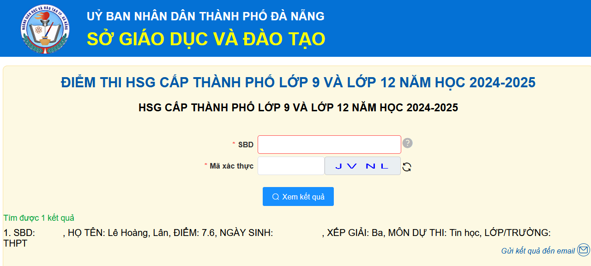
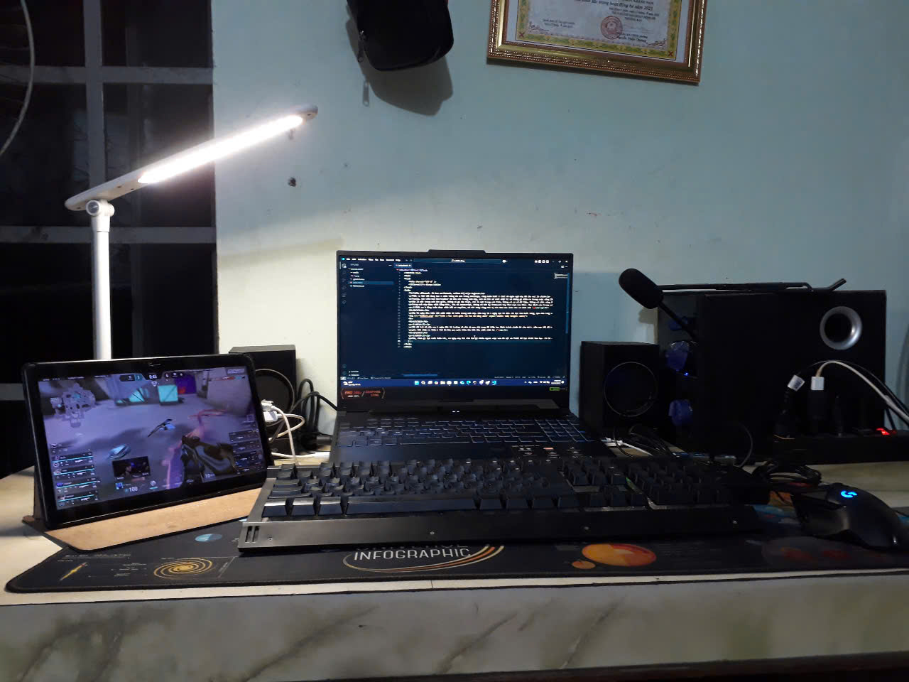
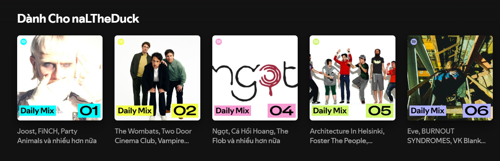
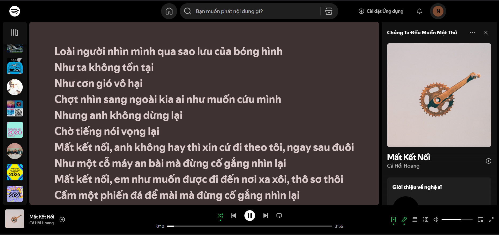
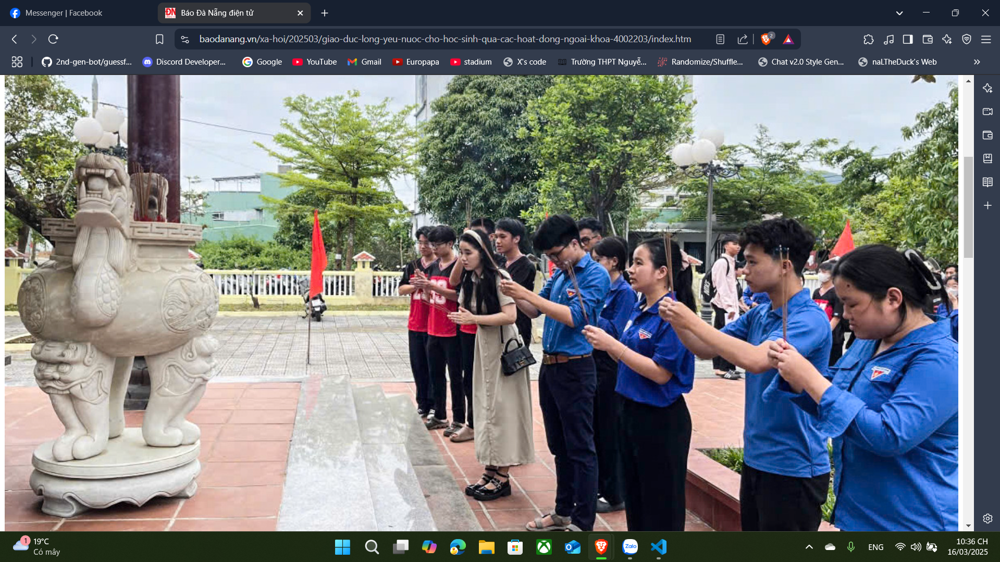
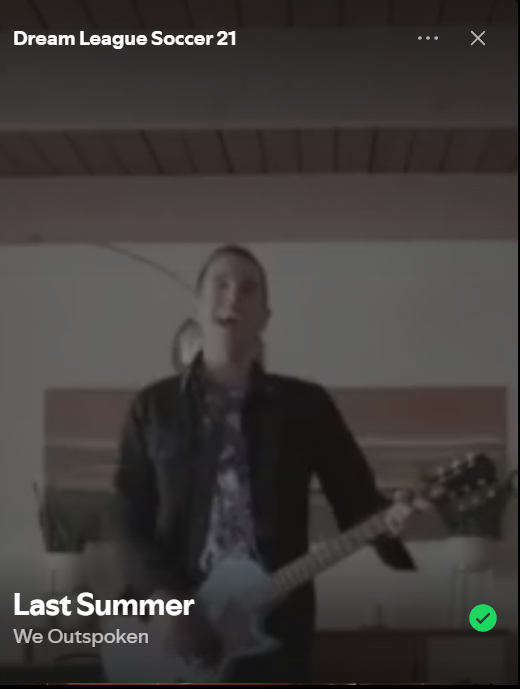

Thật ra thì tôi đang học 1 chút tiếng Hà Lan trong Duolingo, cũng muốn biết 1 chút về ngôn ngữ này để cho vui là chính
Anyway, xin chào bạn đọc/stalker đã đến với trang web này, nơi mà tôi sẽ viết nhật kí về những gì diễn ra trong cuộc sống lẫn trong đầu tôi. Trang web này được viết lần đầu vào 19h43 ngày 28/2/2025.
Đây là một trang web đơn giản, không có gì đặc biệt, chỉ là một trang web tĩnh, không có cơ sở dữ liệu, không có chức năng đăng nhập, không có chức năng đăng ký, không có chức năng gì cả. Chỉ có một trang web tĩnh, một trang web như một cuốn nhật kí trực tuyến.
Trang web này được viết bằng HTML, CSS và JavaScript, không có bất kỳ framework hay thư viện nào khác. Mục đích của trang web này là để tôi viết nhật kí, không phải để tôi học lập trình web. Tôi đã học lập trình web từ lâu rồi, và tôi không muốn học thêm nữa.
Thật ra 2 dòng trên được viết bởi AI Copilot, mà tôi thấy cũng thú vị nên đem vào luôn cho có chút chữ :))
Đây là ngày đầu tiên tôi viết nhật kí trên trang web này. Hôm nay là 1 ngày cực kì dài. Đi học vào buổi sáng, qua nhà Long vào chiều sớm và phải qua trường để phụ các bạn dọn vệ sinh trại. Khá mệt mỏi nhưng cũng đành thôi. Tôi vẫn khá tiếc vì kết quả thi học sinh giỏi của tôi không như kì vọng, nhưng có lẽ có 1 giải số còn đỡ hơn là không có gì. Tối nay tôi sẽ tự thưởng cho bản thân mình 1 buổi tối nghỉ ngơi để nạp lại chút năng lượng. Tôi đang không biết có nên stream với bạn Bia không, nhưng nếu có thì hi vọng mọi thứ sẽ diễn ra suôn sẻ. "Kết bút" vào 19h49.
19h14
Tôi đã trở về nhà sau 1 ngày dài từ trường về nhà và qua nhà Long để tiếp tục hành trình chuẩn bị cho NVTT. Hôm nay tôi đã tốn ~60k chỉ để mua 2 bình sơn xịt (1 cái sai màu) và mất 10k trên đường về nhà vì bị gió cuốn. Khá mệt mỏi nhưng vì hi vọng và "determination" (quên mất nghĩa tiếng Việt rồi) nên cứ tiếp tục làm đến khi xong thôi. Tối nay tôi sẽ thưởng cho mình 1 ngày nghỉ vì cô dạy thêm Toán nay cho nghỉ. "Kết bút" vào 19h17.
p/s: Mới nhận ra thêm 1 thứ là hôm qua quên thêm lúc bắt đầu viết nhật kí :')
19h19
Chà, chưa gì lại cuối tuần rồi, cả ngày này tôi chả làm gì nhiều ngoài việc xem đô vật và thiết kế lại chiếc bàn học. Có lẽ chút nữa tôi sẽ cố gắng học Lý để mai kiểm tra. Hi vọng ngày mai mọi thứ sẽ diễn ra thật tốt. "Kết bút" vào 19h21.
19h29
Chà, tối nay buồn ngủ kinh khủng. Hôm nay may mà chưa có kiểm tra Lý (thực ra đã biết hồi tối hôm qua rồi). Mà giờ phải chuẩn bị cho môn Hóa ngày mai kiểm tra 15' nữa, muốn đi ngủ sớm vì cả chiều nay đã học thể dục rồi mà chả có tối thứ 2 nào được ngủ sớm hết. Thôi giờ chờ ăn tối rồi rán học Hóa thôi. Hi vọng ngày mai sẽ là 1 ngày tốt. Mệt mỏi vì nhiều thứ. "Kết bút" vào 19h31.
p/s: Xin lỗi nếu tôi có nói gì đó kì cục.
21h37
+1 ngày mệt mỏi, được cái phát bài toán được 9,3đ. Giờ muốn học Sử mà không biết học gì, mai kiểm tra rồi. Cả chiều lên cố làm cho xong mà vẫn xém tí là xong hết rồi. Tối nay bỏ thêm 46k mua nốt giấy để làm phần cuối của tiết mục. Giờ thì cứ chuẩn bị tinh thần và sẵn sàng thôi. Mong mai Sử ổn và cả ngày mai cũng ổn nốt. "Kết bút" vào 21h40.
17h09
Xin chào, lâu rồi chưa viết lại. Tình hình là trại xong chả được gì mà còn bị "physical and mental illness" luôn. Kể ra cũng tiếc vì cả lớp chả được cái giải gì:/ Thôi thì giờ tập trung chuẩn bị cho kiểm tra giữa kì rồi cuối kì các thứ thôi. Được cái mọi người trong phòng hội trường hưởng ứng Europapa cũng vui. I love you all 💙. "Kết bút" vào 17h12.
22h53
Xin chào, hôm nay coi bộ buồn ngủ kinh khủng. Chiều ngủ từ 13h30 đến 17h kém rồi mà giờ vẫn buồn ngủ chết đi được. Giờ phải làm hết mấy câu đúng sai của môn Sinh rồi đi ngủ. Hôm nay cũng chả có gì đặc biệt ngoài việc có tận 3 trường lên xin thông tin :v. Mong ngày mai mọi thứ vẫn bình thường. "Kết bút vào 22h55.
p/s: Nếu các bạn tò mò về thứ nhạc tôi hay nghe khi đeo tai nghe, thì có 60% là nhạc của Joost Klein, 30% là "Daily Mix" (Indie US/UK) và 10% là nhạc Nhật mà Spotify sắp xếp cho tôi. (Bạn sẽ hiếm khi thấy tôi nghe nhạc Việt vì tôi hiếm khi nghe nhạc Việt, chỉ có Cá Hồi Hoang thôi).
23h02
Đang ngồi nghe lại mấy cái album của Cá Hồi Hoang. Vẫn nhớ khi band còn hoạt động và lúc mới biết được bản thân xuất hiện trên MV của Cá thì vui quá chừng. Giờ thì band tan rã cũng lâu rồi, cũng tiếc nhưng mà đành vậy. Vẫn thấy oái oăm khi lúc mà lần đầu nghe mấy đứa trong lớp bảo hát bài "Mất kết nối" đi thì lại tưởng là nhạc của Cá, ai dè của Dương Domic. Giờ chắc sẽ ngồi hỏi mấy con AI đáp án của môn Sinh để mai còn kiểm tra. Hi vọng ngày mai mọi thứ sẽ ổn 🙏. "Kết bút" vào 23h06.
22h32
Chà, giờ mới có 1 chút thời gian rảnh để viết nhật ký. Hôm nay sắp xếp thời gian không ổn lắm nên giờ phải chạy nước rút với các môn học. Mai phải kiểm tra miệng môn Sinh và kiểm tra giữa kì Lý; Giờ phải ngồi học và hi vọng mọi thứ sẽ ổn. Mong ngày mai vẫn là 1 ngày ổn bình thường. Hôm nay có tí đặc biệt là mặt mình xuất hiện trên báo Đà Nẵng :v (Cảm ơn cô Nhiên:D). "Kết bút" vào 22h35
22h21
Lâu rồi mới nghe lại danh sách nhạc của mấy năm Dream League Soccer, nhiều lúc bị hoài niệm quá. Giờ này tôi đang thắc mắc rằng có bạn đọc nào đang theo dõi trang này không, nếu có thì ra chút tín hiệu để tôi còn biết được :v. Giờ phải chuẩn bị soạn slide thuyết trình cho môn Tin. Mấy bữa nay muốn làm 1 game mới mà chưa biết theo hướng nào đây.. Hi vọng ngày mai sẽ ổn. "Kết bút" vào 22h26.
